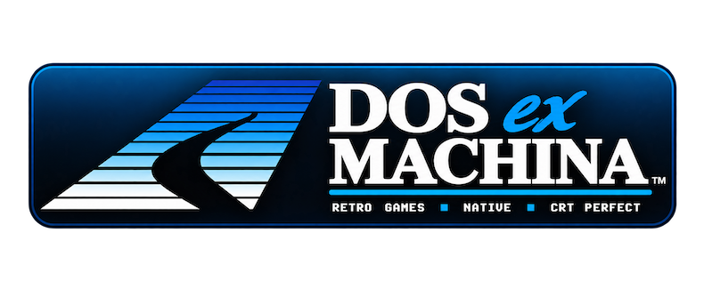
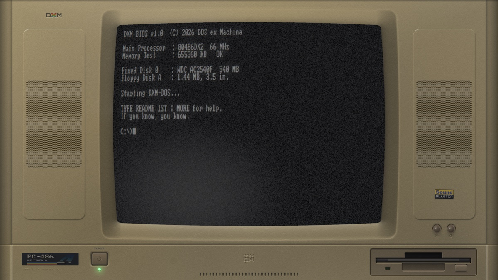
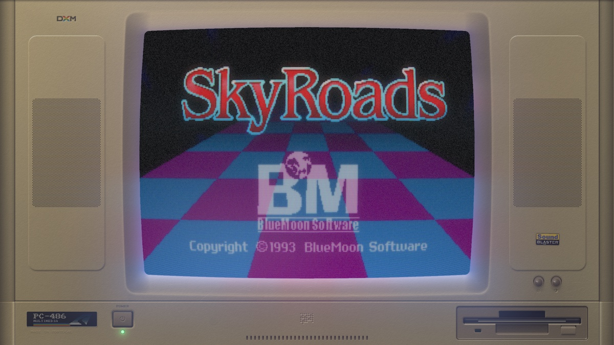
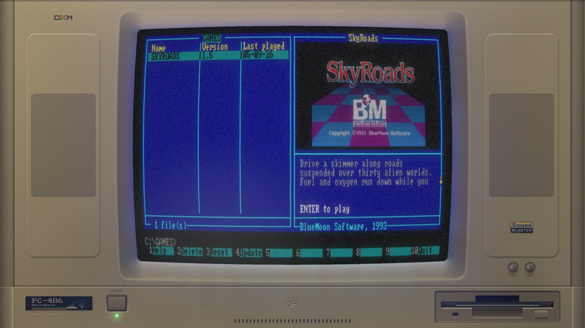

A 1993 PC on your screen. Case, CRT and all.
A beige box that boots a DOS prompt, and runs real games behind the glass.
DOS ex Machina draws a 1993 PC — the case, the moulding, the speaker
grilles, thirty years of wear — and puts a working CRT in the middle of
it. From the C:\> prompt you browse a catalogue, download a
game, and play it in the tube.
The games are not emulated. Each one is a native C port of the original, which also ships as a standalone game in its own right. DXM is the optional machine you can put it inside.


The machine is solved, not painted.
Drawn procedurally at your display's resolution from signed-distance geometry and a lighting model. Moulding partings, speaker pods, vent cuts, ejector-pin marks, scuffs and yellowing — all computed.
Phosphor persistence, barrel curvature, footprint-integrated scanlines, an aperture-grille mask, bloom, and coloured light spilling from the picture onto the plastic around it.
Fan, hum and drive spindle synthesised at run time from measured spectra. A PC speaker POST beep. Only the floppy drive sound is sampled.
Type NC. Press Enter. That is the whole of it.

DXM ships with no games and links none. The catalogue is fetched at run time and cached, so adding a title is an edit to a JSON file rather than a new release — and a machine that has been online once keeps working offline afterwards.
An install fetches the game's module and its data, checks both against a SHA-256, and unpacks them into your preferences directory. After that it runs with no network, forever. Game data is never mirrored: for freeware titles the catalogue points at the publisher's own download.
Needs SDL3, libcurl and zlib, and an OpenGL 3.3 core context. No game checkout required.
git clone https://github.com/pedrocatalao/dos-ex-machina cd dos-ex-machina cmake -S . -B build -DCMAKE_BUILD_TYPE=Release cmake --build build -j8 ./build/dxm
Then NC at the prompt, and Enter on a game.
macOS, Linux and Windows, on x86_64 and arm64, all built by CI. macOS is the one that has been through the whole thing on a real GPU; the Linux and Windows builds launch and initialise but their render is still unverified, because the only machines to hand were VMs without an OpenGL 3.3 driver.
That is the one hard requirement: OpenGL 3.3 core. Most virtual machines cannot provide it.
Three exported symbols, and no dependencies of its own.
A game is a .dxm module opened at run time. It exports
dxm_core_get_info, dxm_core_main and
dxm_core_audio, hides everything else, and links no SDL and
no threading library — which is what makes it loadable everywhere DXM
runs. Its ABI version is checked before anything starts.
exit() — the machine has to survive the gamePORTING.md is the normative contract; SPEC.md covers the machine itself.